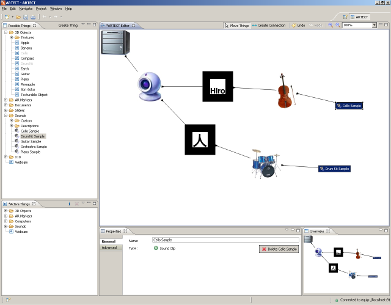
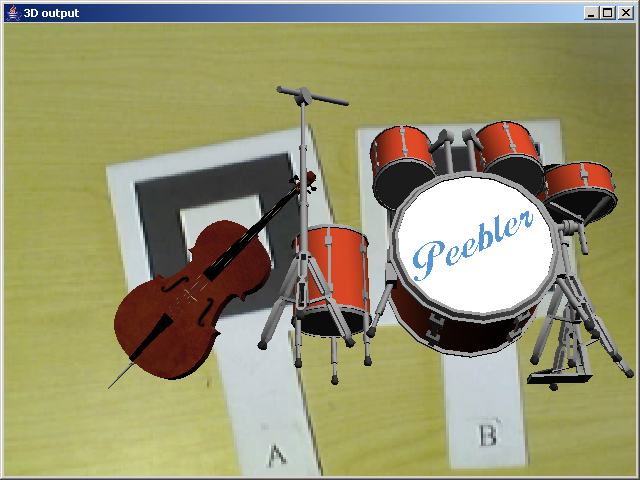

Next, using the same steps as above associate the drum kit 3D model with the second marker (which currently has no content attached to it) and then add the drum kit sound sample to 3D model to create a configuration as shown below.
Now both markers have augmentations in the video view as shown below and each triggers the playback of a sound sample.
